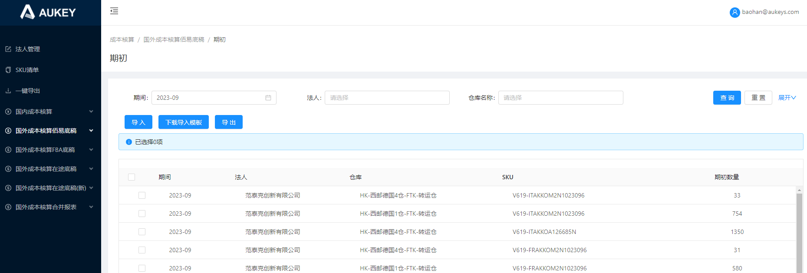

境外成本核算佰易底稿
注意：以下均为新增页面
1.【期初】页面：
1.1搜索框：【法人】：下拉多选，无默认值，选项展示法人管理页面【法人类型】=‘境外法人’且【模块类型】=‘佰易底稿’且【当前期间】不为空的法人主体；
1.2按钮：【导入】：1.2.1所导法人仅限【法人管理】页面中【法人类型】=‘境外法人’且【模块类型】=‘佰易底稿’的对应法人数据；
1.2.2所导期间仅限上述法人主体在【法人管理】页面对应的当前期间；（若存在）其余逻辑不变
——其余页面按钮字段展示及逻辑与【国外成本核算佰易底稿/期初】页面保持一致；
2.【采购入库】页面：
2.1数据源：定时任务1：拉取【佰易/统计报表/采购入库财务查询】数据时，仅限拉取【法人管理】页面中【法人类型】=‘境外法人’且【模块类型】=‘佰易底稿’的对应法人主体当前期间数据；
其余逻辑不变：
定时任务2：修改【国内成本核算/销售出库】定时任务，定时任务在推送国内成本核算/销售出库时，
①向【国外成本核算佰易底稿/采购入库】推送海关单号有值，但不等于NoNeedDelivery，交易期间=上一自然月，
【入库法人主体】在【法人管理】页面中【法人类型】=‘国外法人’且【模块类型】=‘佰易底稿’且当前期间=交易期间的数据；
②向【境外成本核算佰易底稿/采购入库】推送海关单号有值，但不等于NoNeedDelivery，交易期间=上一自然月，
【入库法人主体】在【法人管理】页面中【法人类型】=‘境外法人’且【模块类型】=‘佰易底稿’且当前期间=交易期间的数据；——采购入库取数源
（国内成本核算/销售出库/推送佰易底稿按钮逻辑同步修改）
2.2搜索框：【法人】：下拉多选，无默认值，选项展示法人管理页面【法人类型】=‘境外法人’且【模块类型】=‘佰易底稿’且【当前期间】不为空的法人主体；
2.3按钮：2.3.1【导入】：2.3.1.1所导法人仅限【法人管理】页面中【法人类型】=‘境外法人’且【模块类型】=‘佰易底稿’的对应法人数据；
2.3.1.2所导期间仅限上述法人主体在【法人管理】页面对应的当前期间；（若存在）其余逻辑不变
2.3.2【导入模板】：提示修改为：仅限导入期间为境外法人佰易底稿当前期间的数据；
2.3.3【拉取加权单价、成本】：按照对应境外法人佰易底稿模块的当前期间拉取或删除数据；
——其余页面按钮字段展示及逻辑与【国外成本核算佰易底稿/采购入库】页面保持一致；
3.【调拨】页面：
3.1数据源：定时任务【调拨入库】【调拨出库】【调拨入库】（小平台仓）：仅限拉取【法人类型】=‘境外法人’且【模块类型=‘佰易底稿’的对应法人主体当前期间数据，其余逻辑不变；
定时任务原逻辑参考：https://avvw4o.axshare.com/#g=1&id=evbgz0&p=%E5%9B%BD%E5%A4%96%E6%88%90%E6%9C%AC%E6%A0%B8%E7%AE%97%E4%BD%B0%E6%98%93%E5%BA%95%E7%A8%BF_%E8%B0%83%E6%8B%A8
3.2搜索框：【法人】：下拉多选，无默认值，选项展示法人管理页面【法人类型】=‘境外法人’且【模块类型】=‘佰易底稿’且【当前期间】不为空的法人主体；
3.3按钮：3.3.1【导入】：3.3.1.1所导法人仅限【法人管理】页面中【法人类型】=‘境外法人’且【模块类型】=‘佰易底稿’的对应法人数据；
3.3.1.2所导期间仅限上述法人主体在【法人管理】页面对应的当前期间；（若存在）其余逻辑不变；
3.3.2【导入模板】：提示修改为：仅限导入期间为境外法人佰易底稿当前期间的数据；
3.3.3【批量删除】：按照对应境外法人佰易底稿模块的当前期间删除数据；
——其余页面按钮字段展示及逻辑与【国外成本核算佰易底稿/调拨】页面保持一致；
4.【其他入库】页面：
4.1数据源：定时任务【其他入库】：仅限拉取【法人类型】=‘境外法人’，且【模块类型】=‘佰易底稿’的对应法人主体当前期间数据，其余逻辑不变；
4.2搜索框：【法人】：下拉多选，无默认值，选项展示法人管理页面【法人类型】=‘境外法人’且【模块类型】=‘佰易底稿’且【当前期间】不为空的法人主体；
4.3按钮：4.3.1【导入】：4.3.1.1所导法人仅限【法人管理】页面中【法人类型】=‘境外法人’且【模块类型】=‘佰易底稿’的对应法人数据；
4.3.1.2所导期间仅限上述法人主体在【法人管理】页面对应的当前期间；（若存在）其余逻辑不变；
4.3.2【导入模板】：提示修改为：期间：格式为年份+月份，如2019-08（文本格式），仅限境外法人佰易底稿的当前期间；
4.3.3【批量删除】：按照对应境外法人佰易底稿模块的当前期间删除数据；
——其余页面按钮字段展示及逻辑与【国外成本核算佰易底稿/其他入库】页面保持一致；
5.【其他出库】页面：
5.1数据源：定时任务【其他出库】：仅限拉取【法人类型】=‘境外法人’，且【模块类型】=‘佰易底稿’的对应法人主体当前期间数据，其余逻辑不变；
5.2搜索框：【法人】：下拉多选，无默认值，选项展示法人管理页面【法人类型】=‘境外法人’且【模块类型】=‘佰易底稿’且【当前期间】不为空的法人主体；
5.3按钮：5.3.1【导入】：5.3.1.1所导法人仅限【法人管理】页面中【法人类型】=‘境外法人’且【模块类型】=‘佰易底稿’的对应法人数据；
5.3.1.2所导期间仅限上述法人主体在【法人管理】页面对应的当前期间；（若存在）其余逻辑不变；
5.3.2【导入模板】：提示修改为：仅限导入境外法人佰易底稿当前期间的数据；
5.3.3【批量删除】：按照对应境外法人佰易底稿模块的当前期间删除数据；
——其余页面按钮字段展示及逻辑与【国外成本核算佰易底稿/其他出库】页面保持一致；
6.【销售出库】页面：
6.1数据源：定时任务1【销售出库】：每日1日6点（AM），取佰易的【新商品收发明细】报表的数据；
定时任务2：拉取【佰易/供应链/品牌线下/统计报表/报关明细表】数据；
定时任务3：拉取拉取【期间】为上个自然月【佰易/平台发货订单中心/其他平台订单】的数据；
————以上定时任务仅限拉取【法人类型】=‘境外法人’，且【模块类型】=‘佰易底稿’的对应法人主体当前期间数据，其余逻辑不变；
6.2搜索框：【法人】：下拉多选，无默认值，选项展示法人管理页面【法人类型】=‘境外法人’且【模块类型】=‘佰易底稿’且【当前期间】不为空的法人主体；
6.3按钮：6.3.1【导入】：6.3.1.1所导法人仅限【法人管理】页面中【法人类型】=‘境外法人’且【模块类型】=‘佰易底稿’的对应法人数据；
6.3.1.2所导期间仅限上述法人主体在【法人管理】页面对应的当前期间；（若存在）其余逻辑不变；
6.3.2【导入模板】：提示修改为：仅限导入境外法人佰易底稿当前期间的数据；
6.3.3【批量删除】：按照对应境外法人佰易底稿模块的当前期间删除数据；
——其余页面按钮字段展示及逻辑与【国外成本核算佰易底稿/销售出库】页面保持一致；
7.【转SKU】页面：
7.1数据源：定时任务1【海外转SKU】：拉取佰易【中央库存 - 全网中转仓库存 - 转SKU库存(海外)】报表数据中，【法人类型】=“境外法人”，且【模块类型】=“佰易底稿”的对应法人主体
当前期间数据；
定时任务2【国内转SKU】：仅拉取佰易【中央库存 - 全网中转仓库存 - 转SKU库存】报表数据中，【法人类型】=“境外法人”，且【模块类型】=“佰易底稿”的对应法人主体
当前期间数据；
7.2搜索框：【法人】：下拉多选，无默认值，选项展示法人管理页面【法人类型】=‘境外法人’且【模块类型】=‘佰易底稿’且【当前期间】不为空的法人主体；
7.3按钮：7.3.1【导入】：7.3.1.1所导法人仅限【法人管理】页面中【法人类型】=‘境外法人’且【模块类型】=‘佰易底稿’的对应法人数据；
7.3.1.2所导期间仅限上述法人主体在【法人管理】页面对应的当前期间；（若存在）其余逻辑不变；
7.3.2【导入模板】：提示修改为：仅限导入期间为境外法人佰易底稿当前期间的数据，法人、仓库需真实存在，否则导入失败；
7.3.3【批量删除】：按照对应境外法人佰易底稿模块的当前期间删除数据；
——其余页面按钮字段展示及逻辑与【国外成本核算佰易底稿/转SKU】页面保持一致；
8.【期末（佰易）】页面：
8.1数据源：定时任务取【佰易/统计报表/库存查询报表】的数据——仅限拉取【法人类型】=‘境外法人’且【模块类型】=‘佰易底稿’的对应法人主体当前期间数据；其余逻辑不变；
8.2搜索框：【法人】：下拉多选，无默认值，选项展示法人管理页面【法人类型】=‘境外法人’且【模块类型】=‘佰易底稿’且【当前期间】不为空的法人主体；
8.3按钮：8.3.1【导入】：8.3.1.1所导法人仅限【法人管理】页面中【法人类型】=‘境外法人’且【模块类型】=‘佰易底稿’的对应法人数据；
8.3.1.2所导期间仅限上述法人主体在【法人管理】页面对应的当前期间；（若存在）其余逻辑不变；
8.3.2【导入模板】：提示修改为：仅限导入期间为境外法人佰易底稿当前期间的数据，法人、仓库需真实存在，否则导入失败；
——其余页面按钮字段展示及逻辑与【国外成本核算佰易底稿/期末（佰易）】页面保持一致；
9.【期末（核算）】页面：
9.1搜索框：【法人】：下拉多选，无默认值，选项展示法人管理页面【法人类型】=‘境外法人’且【模块类型】=‘佰易底稿’且【当前期间】不为空的法人主体；
9.2按钮：9.2.1【拉取出入库数据并计算期末】【对账】：仅汇总运算【法人类型】=‘境外法人’，且【模块类型】=‘佰易底稿’的当前期间数据；
——其余页面按钮字段展示及逻辑与【国外成本核算佰易底稿/期末（核算）】页面保持一致；
10.【结账】页面：
10.1数据源：列表同步【法人管理】页面【法人类型】=‘境外法人’且【模块类型】=‘佰易底稿’的数据；
10.2按钮：【结账检查】【结账】按钮逻辑也随之调整；
——其余页面按钮字段展示及逻辑与【国外成本核算佰易底稿/结账】页面保持一致；